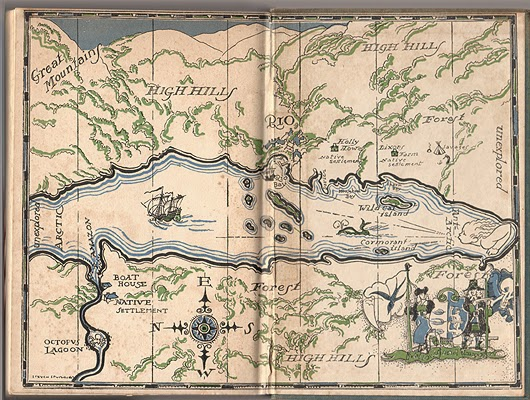
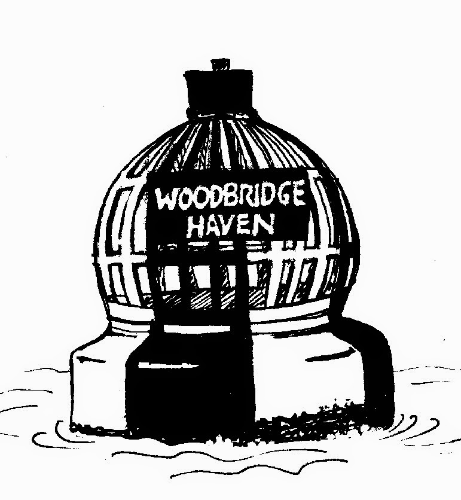

{kind=link}
Last weekend I arrived bright and early at the Orwell Hotel, Felixstowe, Suffolk expecting to put a few handouts on seats, deliver an optimistic box of books for sale, shove a memory stick into a laptop and waltz away for coffee with a friend before returning to spend a happy hour talking about 'Boats and Books' whilst flicking contentedly through my Power Point presentation.
It wasn't quite that simple. This was
the first Book Festival event of the day in the
wonderfully named 'His Lordship's Library,' and the sound engineers
were hard at work. They were perfectionists; the rest of us were a
trifle ad hoc and possibly de trop. The festival organiser had loaned us her laptop and it needed to be woken from deep slumber before it could be persuaded to link to the projector.
There was a wireless mouse which would only squeak in one direction –
either I could go forward through my presentation or I could go back.
I couldn't pop backwards and forwards. The speaker (me) was on a dais with three microphones and the recalcitrant mouse: the screen was on the floor. It was a long narrow room. Anyone sitting in the back row
would see my furrowed brow okay – they would also hear -- but they wouldn't see any illustrations at all.
"Could we put the screen up on the window ledge?" asked my friend, the writer and picture-researcher Philippa Lewis.
"No you can't," said the early birds who'd already got their leads gaffer-taped to the ground.
"Yes you can," said Manuel, the hotel's duty manager in answer to our desperate appeal.
Up went the screen and then Manuel began hefting out piles of His Lordship's leather-bound vols to raise the projector to a corresponding height. All was well until the images began to blur and no-one could discover how to adjust the projector's focus ...
"Oh, I wish we were back in the days when invited speakers just came and TALKED!" snapped the sound engineer.
"Sorry, didn't really mean it," she added, looking at my dejected, coffee-less face.
"S'rright," I mumbled. "It's just that I'm not sure I know how to do it that way any more."
"No you can't," said the early birds who'd already got their leads gaffer-taped to the ground.
"Yes you can," said Manuel, the hotel's duty manager in answer to our desperate appeal.
Up went the screen and then Manuel began hefting out piles of His Lordship's leather-bound vols to raise the projector to a corresponding height. All was well until the images began to blur and no-one could discover how to adjust the projector's focus ...
"Oh, I wish we were back in the days when invited speakers just came and TALKED!" snapped the sound engineer.
"Sorry, didn't really mean it," she added, looking at my dejected, coffee-less face.
"S'rright," I mumbled. "It's just that I'm not sure I know how to do it that way any more."
{kind=link}
I used to. I used to yomp round the
lecture rooms of the WEA (Workers' Educational Association), talking uninterrupted for hours on end,
dishing out my printed sheets and reading aloud from the pile of
reference books stacked on the desk.
Now it's just me and my memory stick and the pictures thereon. The sequence of images acts as my cue-cards and also, I fondly hope, helps give the listeners an additional focus for understanding what I'm trying to say. At least they keep the audience's eyes open for longer than they used to in my lecturing days. **
Now it's just me and my memory stick and the pictures thereon. The sequence of images acts as my cue-cards and also, I fondly hope, helps give the listeners an additional focus for understanding what I'm trying to say. At least they keep the audience's eyes open for longer than they used to in my lecturing days. **
(** Important tip: NEVER underestimate the person in the back row who appears to have slumbered throughout. Their eyes will flash open like paparazzi lenses just when you're ready to pack up and they'll nail you with a string of killer questions which should have them starring in Silk.)
I would never have expected to be working in this way. If there was an equivalent phrase to 'word-blind' or 'tone-deaf' for visual non-responsiveness, I would have applied it to myself without a twinge of embarrassment. Sight-mute, maybe? It's not only in speaking, blogging, facebooking that I've changed the habits of a lifetime, I now want pictures in my stories as well. There's plenty of historical precedent but is it a form of dumbing-down? And, if it is, do I care? The most recent reviewer of Jan Needle's Wild Wood classifies it firmly as 'Literary Fiction' (quite right too - cf Animal Farm) and goes out of her way to comment on the contribution made by Willie Rushton's "exquisitely crafted illustrations beautifully observing facial expressions and individual character nuances." (The Bookbag 23.6.2014)
When I was researching the working life
of Herbert Allingham (1867-1936) for Fifty Years in the Fiction Factory I realised how significant illustration
had been in making fiction accessible a century ago. The first use of the phrase 'a picture is worth a thousand words' is usually dated from 1911. Printing technology had surged ahead in the later
decades of the c19th making pictures so much easier and cheaper to
insert into even the lowest grade of penny periodical. At the same
time literacy levels were rising with the second and third
generations of children affected by urban living and compulsory
schooling. Allingham's most successful pre-WW1 outlets were the
ha'penny comic-and-story papers, hybrid productions intended for the least secure readers -- men
and women as well as boys and girls. They were an odd blend of
primitive strip cartoon, comic short stories and Allingham's immense
melodramatic serials. "Don't forget to work in a good dramatic subject for
illustration in every instalment," his editor reminded him in a
letter of 1908.
After WW1 print had to contend with the growing dominance of cinema, then with wireless and television. Times were hard and publishers were
determined to keep costs down. Penny and ha'penny papers became tuppennies and Wikipedia cites 1927 as the date for
the revised phrase 'a picture is worth ten
thousand words'.
 |
| AR's endpapers for Swallows and Amazons |
{kind=link}
The editor of Mixed Moss, the
journal of the Arthur Ransome Society, was playing devil's advocate recently. "Why should authors want drawings in their
novels?” he asked. “Are the words not enough?" I wonder he dared! Ransome felt so strongly about the drawings in his books
that he sacked the professional illustrator of the Swallows and Amazons series after the first two volumes and supplied them all
himself -- insisting that he be paid 'trade rates'.
I too feel strongly about the drawings in my Strong Winds
series and cling to Claudia Myatt's skill and professionalism as to a liferaft in mid-ocean. Her pictures are not
just decorations -- though there's nothing wrong with making a page look good, whether on paper or a screen -- they increase the
accessibility of the text. All those different boats and their
associated vocabulary are made obvious to the merest
lubber and her maps locate the action. (I've taken to writing with a chart and a set of tide tables beside me to make sure I don't allow myself to cheat.) I think that their most important function is to give the reader
moments to pause and reflect. The blank space at every chapter end does this naturally, of course. Claudia's sketches
offer a quiet commentary on the action which is her own artistic
contribution. She calls it "thinking with a pencil".
 |
| a 'safe water' mark by Claudia Myatt |
From
Ransome's day to the 21st
century printing technology has been revolutionized again. Pictures
fell out of older children's fiction as the twentieth century
progressed -- largely due to the practicalities of mass production and perhaps the feeling that children who wanted pictures were plentifully supplied elsewhere. Certainly there'll never again be the hunger for visual stimulation that there was a hundred years ago. In fact we are so surrounded by images today that I can already hear some readers muttering grumpily "Picture worth a thousand words, pshaw! I'll trade a thousand unedited digi-snaps for a single well-chosen word."
All the same, the new freedom offered by digital printing techniques -- where essentially the layout of the document as a giant PDF is more like magazine publishing than the rolling spools of text -- can be interpreted to make each book, whether e- or paper, a more varied, individual and attractive artefact. My friend Philippa Lewis (she of the Felixstowe Book Fest emotional support team) has just published Everyman's Castle: the story of our cottages, country houses, terraces, flats, semis and bungalows. Apart from being an excellent and expert account of vernacular housing it's a model of good quality book production with paintings, photographs, maps, plans, advertisements flowing seamlessly throughout. Every image is positioned exactly where it's most effective.
{kind=link}
Everyman's Castle is currently only on paper and is published by Frances Lincoln, a 'traditional' publisher committed to good design. For independent (or small press) e-book excellence I'd cite Kathleen 'no relation' Jones's biography of Katherine Mansfield. It's published by her and her husband Neil Ferber at The Book Mill and production values are high. Pictures are interspersed through the text exactly as required and every chapter heading is given space and ornamentation, 'printers flowers' culled from the days of letterpress. We have that freedom now.
I loved being part of the Felixstowe Book Festival -- I knew I would, I'd met Linda Gillard there last year -- and I loved them especially for sending me to visit some of the local primary schools. A few days after the anxieties at the Orwell Hotel I was standing next to a headteacher as she too
struggled to persuade her laptop to accept my memory stick so that I
could do an assembly for the children. There were three hundred and seventy of them aged 4-10 waiting patiently on the hard floor of their school hall and I only had a couple of flags and three books in my bag if the electronics didn't co-operate.
Chastened by the nuisance I was becoming I apologised for being a speaker who needed pictures to help her speak.
"Oh good heavens, don't worry about that! This modern technology's an absolute blessing. I was teaching a class about William Morris last week when I was called out to deal with an incident in another part of the school. So I simply left all of them exploring his work through websites. They'd got so much done by the time I was able to get back. I can't think how we managed without."
Chastened by the nuisance I was becoming I apologised for being a speaker who needed pictures to help her speak.
"Oh good heavens, don't worry about that! This modern technology's an absolute blessing. I was teaching a class about William Morris last week when I was called out to deal with an incident in another part of the school. So I simply left all of them exploring his work through websites. They'd got so much done by the time I was able to get back. I can't think how we managed without."
{kind=link}
William Morris -- arts and crafts movement, Kelmscott Press, designer, poet, activist -- perhaps you should become the patron saint of imaginative and beautiful e-book design. The best of the old nurturing the new.